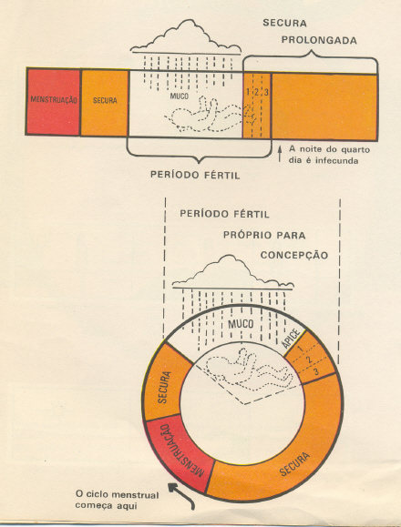
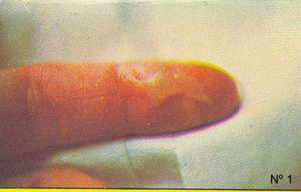
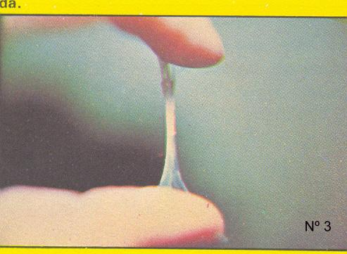
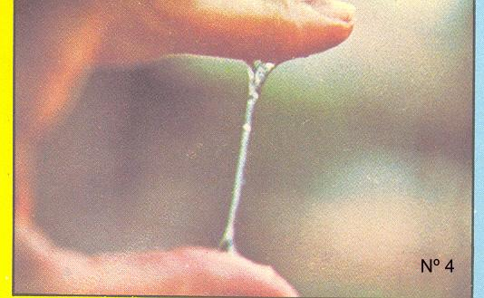
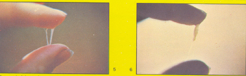
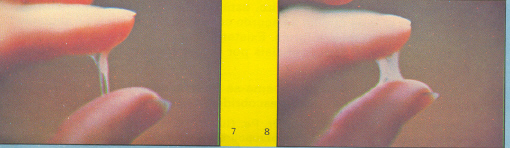

Pelas Leis da humanidade e de Deus, a união entre um homem e uma mulher através do Sacramento do Matrimônio se completa pelo exercício legítimo da relação sexual. Então, ele não é um “pecado permitido”, mas é sim, uma obrigação do homem e da mulher quando assumem o Casamento, porque será pelo sexo que cumprirão a parte de sua vocação, colaborando no Plano de Deus:
“Deus os abençoou e lhes disse: Sejam fecundos e multiplicai-vos, enchei a Terra e submetei-a”... (Gn 1, 28)
Significa dizer que a sexualidade entre os cônjuges é perfeitamente lícita e normal. Mas para que o exercício do sexo no Matrimônio seja absolutamente correto, ele terá que ser a expressão do verdadeiro amor que une o casal.
Por serem duas pessoas diferentes fisicamente, o homem e a mulher se completam pelo sexo, pela própria natureza humana. Por isso mesmo, sendo seres racionais, com inteligência e sentimento, não se justifica a relação sexual “sem amor”, isto é, apenas com a intenção de satisfazer o instinto sexual conduzidos pela força da concupiscência, ocultando na mente as virtudes racionais que impõe a boa moral.
O ato sexual não deve ser apenas um “ato físico”, mas a doação mútua de um homem e de uma mulher que se amam, sendo ele a consumação de um permanente carinho que acontece numa vivência harmoniosa e repleta de ternura.
Por esse motivo, não existe justificativa e nenhuma razão, para o exercício do sexo fora do Casamento. É um fato que só pode ser interpretado como uma busca visando satisfazer a vaidade pessoal, ou um cultivo pernicioso da cobiça alheia, ou pelo prazer “da carne”, numa entrega irresponsável a lascívia e a sensualidade.
Ao homem e a mulher está prescrito o dever e a responsabilidade de manter a dignidade e a honra pessoal, resistindo a todas as formas e insinuações de libidinagem, procurando realizar sua vocação como autênticos filhos de Deus.
Isto significa dizer, que em todas as circunstâncias, é condenável a sexualidade fora do Matrimônio. Porque ela não atende as suas específicas finalidades, além de ocasionar um efeito nocivo de “continua insatisfação”, que estimula uma constante busca de outras experiências, ou de outros prazeres. Este acontecimento desvia a pessoa de sua finalidade principal e até do ideal de vida, pela acomodação e desânimo, abrindo espaço ao maligno que trama e mantém a sua mente “amarrada” ao sexo, causando uma abominável dependência!
Por outro lado, devemos realçar que o “sexo” é um complemento necessário à vida de um casal, mas não é o “elemento único e fundamental” que manterá o casal harmonioso, unido e feliz. Sem dúvida ele tem a sua importância, quando realizado dentro do Casamento cumprindo a utilidade de satisfazer sexualmente o casal e realizar a missão Divina de procriar. Entretanto, fora do Matrimônio, além dos aspectos negativos mencionados, apresenta outras consequências imprevisíveis, que atualmente tem sido agravadas por uma impressionante proliferação de doenças sexualmente transmissíveis.
São doenças terríveis e extremamente perigosas que ocasionam transtornos, traumas e até a morte. Somente para recordar, vamos citar as mais importantes: Sífilis (Cancro Duro), Cancro Mole, AIDS, Candidíase, Herpes Genital, Blenorragia (Gonorréia), Condiloma, Linfogranuloma, Pediculose, Hepatite B, Infecção por Clamídia, Infecção por Trichomonas, Infecção por Ureaplasma, Infecção por Gardnerella, Molusco Contagioso, etc.
Esta realidade quer mostrar as pessoas, o perigo da “mudança de parceiro”! Ao satisfazer a força da concupiscência que quer dominar o corpo, o homem e a mulher que assim procedem, além de transgredir a consciência interior no sentido do direito, da justiça e do amor fraterno, coloca em perigo a sua própria existência. Isto porque, ninguém traz na testa uma “estrela” anunciando com antecedência, se está com sua saúde em estado absolutamente normal ou se possui “algum problema”.
Só para ilustração, há vários casos que tivemos conhecimento, através de relatórios médicos arquivados em hospitais, que descrevem acontecimentos impressionantes, pela falta de amor e de piedade para com o próximo. Pessoas, homens e mulheres, com doenças venéreas de alta periculosidade, mesmo assim, procuram parceiros e realizam o ato sexual, propagando a doença! E percebam, não são histórias de pessoas do “baixo mundo”! Ao contrário, são pessoas membros de famílias tradicionais, algumas com aspecto exterior atraente e muitas, com confortável condição financeira!
Creio não serem necessários outros argumentos e nem outras considerações, para mostrar que o sexo fora do Matrimônio não é legal sob o aspecto espiritual e moral, além de ser extremamente perigoso para a saúde e a vida dos parceiros.
ANATOMIA DO HOMEM E DA MULHER>
1)Aparelho genital masculino: Ele se compõe de dois Testículos (os ovos) que produzem hormônios masculinos e espermatozóides (são as células reprodutoras), de Canais Ejaculadores, a Próstata (glândula) e do Pênis (órgão do ato sexual, coito ou cópula).
2)Aparelho genital feminino: Compõe-se externamente de Vulva e Vagina (com hímen, membrana elástica perfurada ou não, na entrada da Vagina) e internamente possui:
2.l – O Útero com o formato de uma pêra; ele tem diversas funções: receber o Óvulo mensalmente e expulsá-lo juntamente com a mucosa uterina, sob a forma de hemorragia, originando a Menstruação; recebe o Óvulo fecundado pelo Espermatozóide masculino e vai expulsá-lo quando estiver concluído o tempo da gravidez.
2.2 – Têm também duas Trompas e dois Ovários, cuja função é produzir hormônios e Óvulos (que são as células de reprodução da mulher).
BUSCA DA HARMONIA SEXUAL
A harmonia no ato sexual é uma providência necessária que deve ser procurada pelo casal, porque no plano físico significa a obtenção simultânea do orgasmo (gozo), ponto máximo alcançado pela excitação no ato sexual.
Para consegui-la requer um natural e insistente esforço dos dois, que devem procurar se ajustarem na melhor e mais adequada posição, depois de uma necessária excitação antecedente no corpo do homem e da mulher. A regra básica parte do princípio que os dois são iguais, no direito, na justiça, no amor e no sexo. Assim sendo, cada um individualmente deve procurar como demonstração amorosa, proporcionar o melhor e maior prazer ao outro.
Existem fatores que favorecem ao casal alcançar à harmonia no ato sexual:
a)A tranquilidade e a concentração durante o ato é uma preciosa providência, evitando conversas, principalmente sobre assuntos diferentes. Havendo inibição é necessário conversar com clareza e simplicidade sobre o assunto, colocando na mente o exercício sexual, objetivando alcançar a plenitude do prazer. Pode acontecer a necessidade de um deles ter que receber um maior estímulo, para poder se firmar. A maneira melhor de fazer estes estímulos fica a critério dos dois.
b)Na preparação inicial devem ser realizadas as carícias conscientemente e sem precipitações, hesitações, sem brutalidades e gestos animalescos. Deve ser com carinho e suavidade, para aumentar o desejo.
c)Após o ato sexual não deve ser desprezada a gentileza, o carinho e a atenção que deve continuar a existir no casal, principalmente quando juntos no mesmo leito se preparam para dormir.
d)Se o ato não foi perfeito e se não aconteceu como o casal esperava, conversem sobre o assunto, troquem idéias e sugestões, e se preparem melhor para a próxima vez.
Outra providência importante, que não pode e não deve ser legada ao esquecimento é o “Exame Médico Pré-Nupcial”. Todos os casais devem passar por ele, procurando corrigir as suas deficiências, problemas fisiológicos ou algum tipo de dificuldade que possuam, objetivando poderem viver com normalidade.
O “Pré-Nupcial” consiste nos seguintes exames:
1) Exame Clínico geral;
2) Radiografia Pulmonar;
3) Exame local, no Aparelho genital (fimose, corrimentos)
4) Exame de Sangue (determinar o tipo de Sangue, fator Rh e se há Sífilis);
5) Exame de Urina (determinar se existe pus, ou diabete);
6) Exame de Fezes (determinar se há Vermes);
7) Conselhos finais do Especialista.
MÉTODOS DE LIMITAÇÃO DE FILHOS
São diversos os motivos que conduzem as pessoas a transferir ou limitar a chegada dos filhos: havendo doença ameaçadora na família, difícil situação financeira, ocupação profissional ou trabalho assalariado muito distante do lar e outros impedimentos.
Existe também o “Controle da Natalidade” instituído pelo Governo e Autoridades Sanitárias, visando à redução dos nascimentos por motivo de falta de alimentação, de higiene e por fins geográficos.
Sob outro título, também instituído pelo Governo e por Associações Assistenciais, há o “Planejamento Familiar”, que informa fornecendo os meios para a utilização dos métodos anticoncepcionais e abortivos, as classes menos favorecidas financeiramente, todavia “sem qualquer tipo de restrição e sem considerar o aspecto ético da questão”.
Finalmente temos a “Paternidade Responsável”, que é o caminho mais correto e ideal para todos os Casais, porque propõe um planejamento familiar consciente, não possibilitando nenhum prejuízo a saúde do Casal e estando conforme a Lei de Deus, usando exclusivamente os métodos naturais de controle da natalidade, sendo os métodos baseados nos períodos férteis e não férteis da mulher.
Assim sendo, antes de examinarmos as razões para a limitação dos filhos, assim como os métodos existentes para realizar este objetivo, vamos refletir sobre alguns aspectos importantes, que devem suscitar aos casais a necessidade de ter e criar os seus filhos.
Os filhos são “invenções do Criador” para a formação e crescimento
da humanidade e portanto, são Dons de Deus.
Vimos que todas as pessoas nascem com um Corpo e uma Alma, e que a Alma é
enviada pelo Senhor à cada criança que nasce. Então, cada pessoa, além da
parte humana de seu Corpo, possui a Alma que é a parte Divina. Significa dizer,
todas as pessoas, além do seu Corpo têm uma parte sagrada que vem de Deus,
a sua Alma.
Os filhos são elos fortes que atuam de maneira preponderante para manter os casais unidos, apesar de todas as crises de incompreensões que surgirem na caminhada existencial do Casal. Isto porque, num Casamento realizado conforme as Leis dos homens e de Deus, os filhos são de modo inquestionável, testemunhos vivos do amor dos cônjuges. Gerar filhos não é apenas um resultado evidente de um ato biológico. Pelo Sacramento do Matrimônio o Casal se torna “uma só carne”, e esta única carne une os seus genes para formar uma criatura, da maneira que o Criador estabeleceu.
Assim, embora gerados corporalmente pelos pais, de serem criaturas humanas, as crianças (como toda humanidade) são “Filhos de Deus” pela Alma que habita o seu Corpo e pela Graça Santificante que recebe no dia do seu Batizado.
Por outro lado, os Filhos completam o lar de toda família. Os pais se orgulham de examinar minuciosamente os seus filhos para encontrar as semelhanças, que são os eternos laços familiares que elas conduzirão por toda a vida. Então o nascer, está inserido na própria natureza humana, foi criado e ordenado por Deus. Isto significa dizer, que casar é um ato plenamente “natural” , para gerar os seus filhos tornando-se pais, e na continuidade serem avós, e quem sabe até bisavós ou tataravós.
Assim sendo, os Casais que se organizam e conscientemente programam a sua existência, assumem a Paternidade Responsável em plenitude, revelando, sobretudo, que vivem em total harmonia com a Vontade de Deus.
Considerando outros aspectos: os casais que
tendo algum problema físico ou genético, e que por isso estão impedidos de gerar
os seus próprios filhos, poderão adotar crianças para formar sua família ou
poderão viver somente a dois, auxiliados e amparados pela graça de Deus.
Mas aqueles Casais que se recusam egoisticamente a gerar os seus filhos, não
cumprem na essência a finalidade de sua existência. Em muitos casos, eles preferem
criar algum animal doméstico como se fosse um membro da família, porque como dizem,
dá menos trabalho e são menos exigentes. Este fato, com certeza, resultará numa
existência vazia e frustrada, principalmente quando chegar o ocaso da vida.
MÉTODOS ANTICONCEPCIONAIS ARTIFICIAIS
Métodos não aprovados e nem recomendados pela Igreja:
a) Camisa-de-vênus - Preservativo masculino e hoje também feminino. Os riscos principais que atestam sua ineficiência são: possibilidade de romper-se durante o ato e a baixa qualidade do material empregado (é um tipo de borracha que pode ocasionar danos a saúde da mulher).
b) Diafragma - Atua como uma rolha no fundo da vagina, impedindo a passagem do espermatozóide. O diafragma não deve ser retirado antes de completar oito horas após a relação sexual. Por se tratar de um corpo estranho, provoca incômodo e irrita a mulher no período de espera.
c) Vasectomia - Corresponde no homem, à ligação das trompas na mulher. Consiste no corte dos canais que levam o espermatozóide do testículo à próstata.
d) Lavagem Vaginal - Feita imediatamente após o coito.
e) Ligadura das Trompas da mulher - Que corresponde a Vasectomia do homem.
f) Espermicidas – São pomadas industrializadas ou preparadas em laboratório.(Apresenta consequências desagradáveis)
g) Pílula Anticoncepcional – Causa depressão nervosa e produz descontrole hormonal.
h) Injeção de hormônios – Para abortar.
Os Métodos Artificiais colocam em risco a saúde da mulher além de poderem ser também abortivos.
MÉTODOS ESSENCIALMENTE ABORTIVOS
a.1) DIU - Dispositivo intra-uterino que consta de um fio plástico, macio, flexível em forma de S, ou de um pequeno disco com forma irregular que é introduzido no útero.
a.2) PÍLULA DO DIA SEGUINTE - Uma expressão para designar um estrógeno sintético - dietilboesterol -conhecido pela sigla DES. Numa primeira apreciação, tomar uma pílula depois da relação sexual parece ser vantajoso! Mas, a grande dose de hormônios (estrogênio) que a pílula contém faz com que ela seja perigosa à saúde, inclusive, causando náuseas, vômitos e outros efeitos desagradáveis. Ela é abortiva, causando a eliminação do feto aos seis ou oito dias de vida. Por isso mesmo, ela deve ser condenada por todos que respeitam e defendem a vida.
MÉTODOS NATURAIS
Citaremos apenas os mais conhecidos e aquele que é especialmente recomendado pela Igreja. Todavia existem muitos outros Métodos Naturais que não prejudicam a saúde e podem auxiliar na “Maternidade e Paternidade Responsável”.
b.1) MÉTODO DE OGINO KNAUS – Também chamado de Método do Calendário – É o método que tenta determinar os períodos fecundos e não fecundos, utilizando tabelas e baseando-se nas observações dos ciclos menstruais anteriores, permitindo calcular o aparecimento da próxima menstruação. Também é conhecido pelo nome de método da “tabelinha”. Sem duvida é um método natural e, portanto, respeita as leis da natureza e da moral, sendo aceito conscientemente para o Planejamento Familiar.
b.2) MÉTODO DO DR. HOLT – Conhecido como Método do Termômetro – Utilizando um termômetro colocado na Vagina, para medir a variação de temperatura, determinando desta forma, os dias férteis e os dias não perigosos para a relação sexual.
b.3) MÉTODO DO DR. THURSTON SCOTT JELTON – Ele escreveu um livro onde expõe minuciosamente o seu método, o qual denominou de “Método Moderno da Limitação de Filhos”.
b.4) MÉTODO DO DR. JOHN BILLINGS – Conhecido simplesmente pelo nome de Método Billings ou Método da Ovulação. Pelo fato de ser um Método aprovado e recomendado pela Igreja, e também, por ser fácil de ser seguido, apresentaremos a seguir uma minuciosa e ilustrada informação sobre o mesmo. Entretanto, o sucesso do método depende da compreensão dos cônjuges, de suas observações e anotações exatas, e, portanto, da cooperação mútua num correto acompanhamento. Assim sendo, o controle da fertilidade do casal depende tanto do homem como da mulher. O diálogo entre os dois com o interessado conhecimento do estado da mulher fortalecerá o vínculo matrimonial e aumentará a harmonia entre os dois.
A fertilidade da mulher depende da presença do “Óvulo maduro”, ou seja, no tempo fértil lá estará o “Óvulo maduro”. Este “tempo fértil” apresenta um sinal infalível, é o “Muco”. Assim sendo, quando aparecer o “Muco” já sabe, a mulher entrou no período fértil, que se estenderá após o Ápice por mais três dias.
Isto significa dizer que a mulher tem que observar a si mesmo, a fim de poder identificar a chegada do “Muco”. Considerando que o homem é normalmente fértil, para facilitar a identificação do “Muco”, a mulher tem que se abster das relações sexuais durante o primeiro ciclo de observação.
Todavia, o Casal deve estar atento, principalmente a mulher, porque cada ciclo tem as suas características, eles não são absolutamente iguais e nem sempre são semelhantes.
Outro aspecto importante, o exame na Vagina deve ser feito externamente e na sua entrada. Não é preciso fazer um exame profundo, porque internamente ela é sempre úmida.
Para facilitar à primeira observação, como ponto inicial de referência, a abstinência do Casal deve começar com o aparecimento do “Muco” na mulher que se caracteriza pela sensação de que a Vulva está lubrificada. Ao terminar o “Muco” é preciso se abster das relações sexuais durante mais três dias completos. Assim sendo, na noite do quarto dia seco (sem Muco) começa o período de “Secura”(não fértil), que se estenderá normalmente até a próxima “Menstruação”. Então, este é um período seguro para o relacionamento sexual do Casal.
Entretanto, se aparecer o “Muco” em qualquer etapa do ciclo, o Casal deverá evitar o exercício do sexo naquele dia, ou naqueles dias em que o “Muco” permanecer, e mais nos três dias seguintes.
Este fato pode ocorrer, embora não é normal e por isso, se acontecer com frequência deve ser consultado um profissional da Medicina em Ginecologia.
Deverão evitar as relações sexuais também no período da Menstruação, até que tenham absoluta certeza de estar no período não fértil (período da Secura).
No período Seco antes da Ovulação (pré-Ovulatório), o Casal pode manter relações sexuais em dias alternados; se o dia seguinte (posterior) for seco, o Casal pode continuar mantendo a mesma conduta, conforme já foi devidamente explicada.
Observação importante: no ciclo curto, a mulher terá pouco ou nenhum dia seco depois da Menstruação e antes da Ovulação (quando aparece o Muco e a sensação de lubrificação da Vagina).
Assim sendo, é preciso fazer uma cuidadosa observação diária e anotá-la num caderno. Estas anotações devem ser feitas na mesma hora de cada dia. É aconselhado que seja às 19h00min de todos os dias. Guarde as anotações que será o seu controle, para um melhor conhecimento de sua pessoa e também poderá servir para ensinar o Método a outras pessoas.
A seguir, ilustramos as principais características do Método Billings:
MÉTODO BILLINGS
Esquema objetivando uma consciente utilização do Método:

Nº 1 - No primeiro dia poderá remover da Vagina um pouco do MUCO. Ele é pegajoso e sem elasticidade. Mas dará à mulher a sensação de estar com a Vulva molhada.

Nº 2 - No dia seguinte, ele (o MUCO) ainda se apresenta pegajoso, opaco, viscoso e um pouco elástico, como se fosse amido.
Nº 3 - No terceiro ou quarto dia o MUCO se torna mais transparente, mais elástico, mas ainda pode ser pouco viscoso. Todavia, aumenta a sensação de estar molhada.

Nº 4 - Este é o Sinal que ocorre logo antes da Ovulação: o MUCO se apresenta transparente, pode ser esticado bastante sem romper, como clara de ovo. Sensação de estar molhada por mais um ou dois dias.

Nº 5 - A seguir há mudança no MUCO, ele já não é tão claro, é mais opaco e fibroso, menos elástico. A sensação de estar molhada ou com a VULVA lubrificada deve ter desaparecido. Apresentando estes sintomas, no último dia da sensação de estar molhada, será o "ÁPICE" do período fértil.
Nº 6 - Eventualmente a quantidade de MUCO diminui e ele é novamente pegajoso, mas quase não é elástico. Às vezes apresenta-se com grumos, uma pasta com aglomeração em algumas partes, como se fosse alguns nódulos.

Nº 7 - No dia seguinte ele se torna ainda mais pegajoso, espesso, mas em menor quantidade e não estica.
Nº 8 - Finalmente o MUCO se apresenta pegajoso, opaco, de cor mais leitosa como amido, em menor quantidade. A seguir desaparece e começa a sensação de "nada".

Mesmo após o desaparecimento do MUCO ainda é preciso guardar abstinência por mais três dias completos. E então, somente a partir da noite do quarto dia, inclusive, começa o período não fértil, que é seguro para as relações sexuais.
Por estas observações fica evidente que a quantidade e volume de MUCO não têm tanta importância, o que deve ser observado com muito cuidado é o tipo do MUCO, a sua mudança e a maneira como se apresenta, espesso, ou igual à clara de ovo e depois, voltando a ser espesso; como também deve ser observado com muito critério a "sensação de estar molhada" (ou com a Vulva lubrificada). Isto porque, no ciclo da mulher existem duas sensações fundamentais na VULVA:
1 - SECURA, inclusive a sensação "de nada" ou não percebendo qualquer sensação.
2 - UMIDADE, suor, calor, elasticidade, lubrificação, molhada.
PROCURANDO RESUMIR
Com a intenção de esclarecer as várias características do MUCO no Período da Ovulação, a seguir apresentamos um pequeno resumo.
Tempo A - Época possivelmente fértil (no início) - MUCO espesso, opaco, amarelado, pegajoso, sem elasticidade, mas com sensação de VULVA molhada.
Tempo B - Época seguramente fértil - Sensação de estar molhada, MUCO com elasticidade, como clara de ovo, pode ter cor de palha ou com um pouco de sangue, produz lubrificação, é transparente ou um pouco opaco, ralo e fino.
Tempo C - Época seguramente fértil (no fim) - O MUCO pode tornar a ser opaco pegajoso e também perder a sua elasticidade, ficando igual como foi no início. Logo depois desaparece.